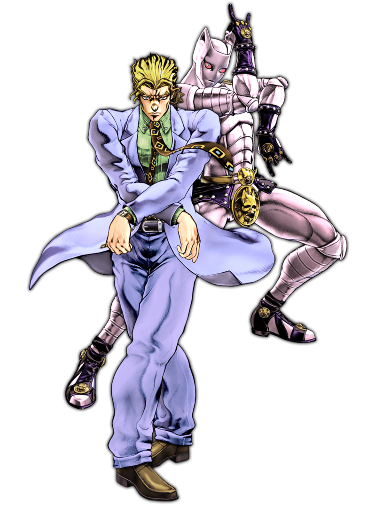

The original monologue
“My name is Yoshikage Kira. I'm 33 years old.
My house is in the northeast section of Morioh, where all the villas are, and I am not married.
I work as an employee for the Kame Yu department stores, and I get home every day by 8 PM at the latest.
I don't smoke, but I occasionally drink.
I'm in bed by 11 PM, and make sure I get eight hours of sleep, no matter what.
After having a glass of warm milk and doing about twenty minutes of stretches before going to bed,
I usually have no problems sleeping until morning.
Just like a baby, I wake up without any fatigue or stress in the morning.
I was told there were no issues at my last check-up.
I'm trying to explain that I'm a person who wishes to live a very quiet life.
I take care not to trouble myself with any enemies, like winning and losing, that would cause me to lose sleep at night.
That is how I deal with society, and I know that is what brings me happiness.
Although, if I were to fight, I wouldn't lose to anyone.”
